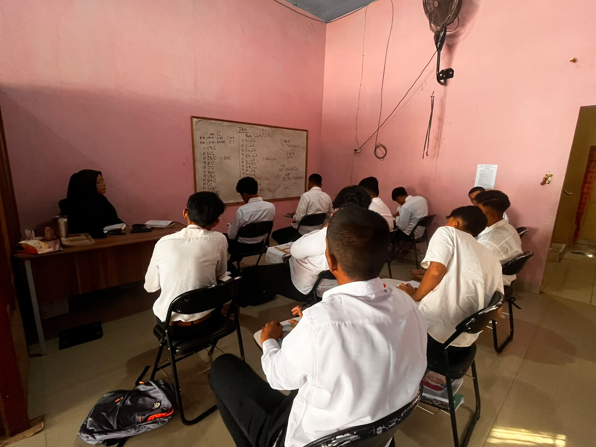
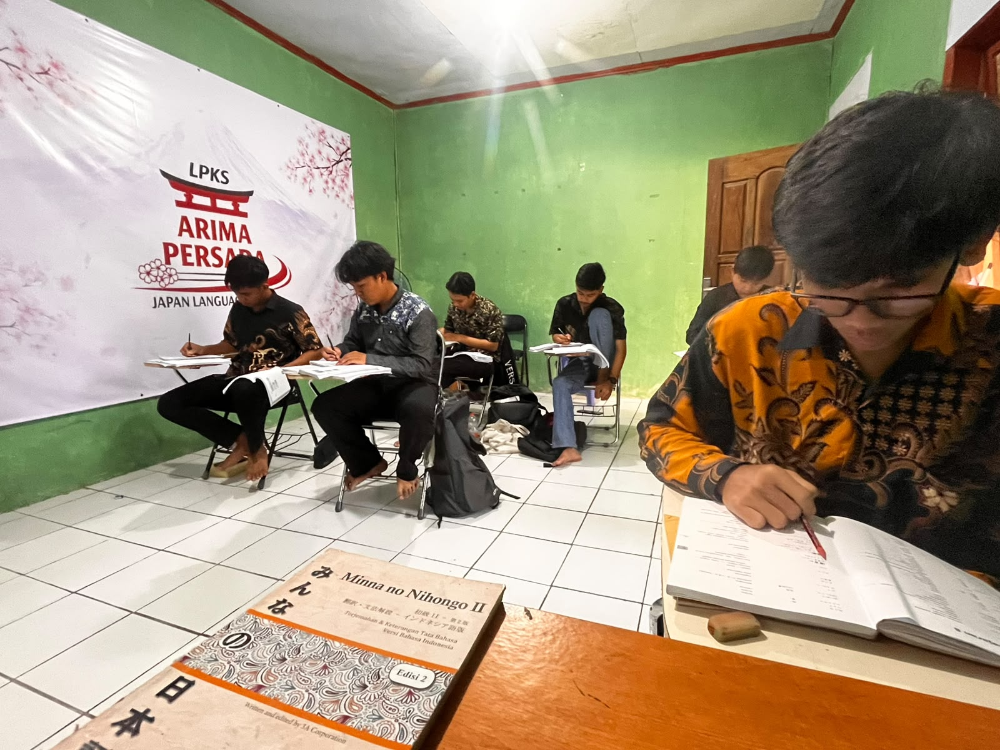
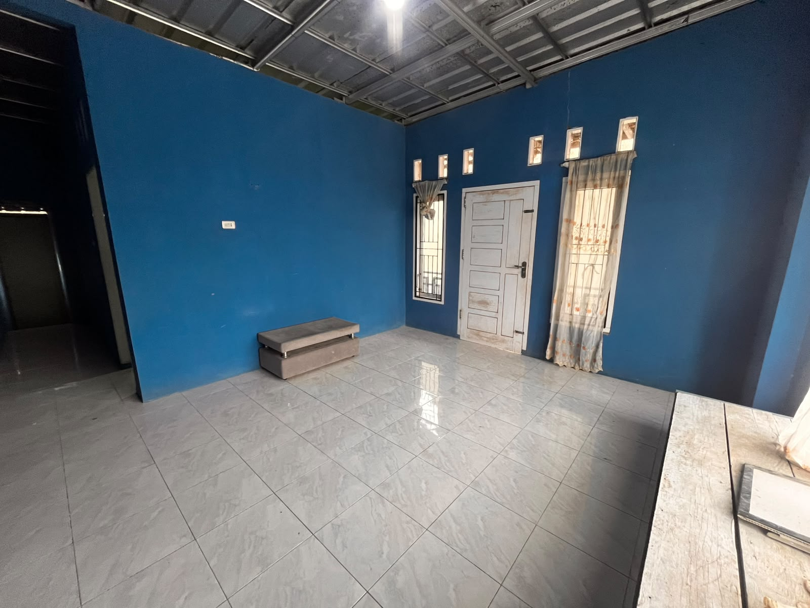
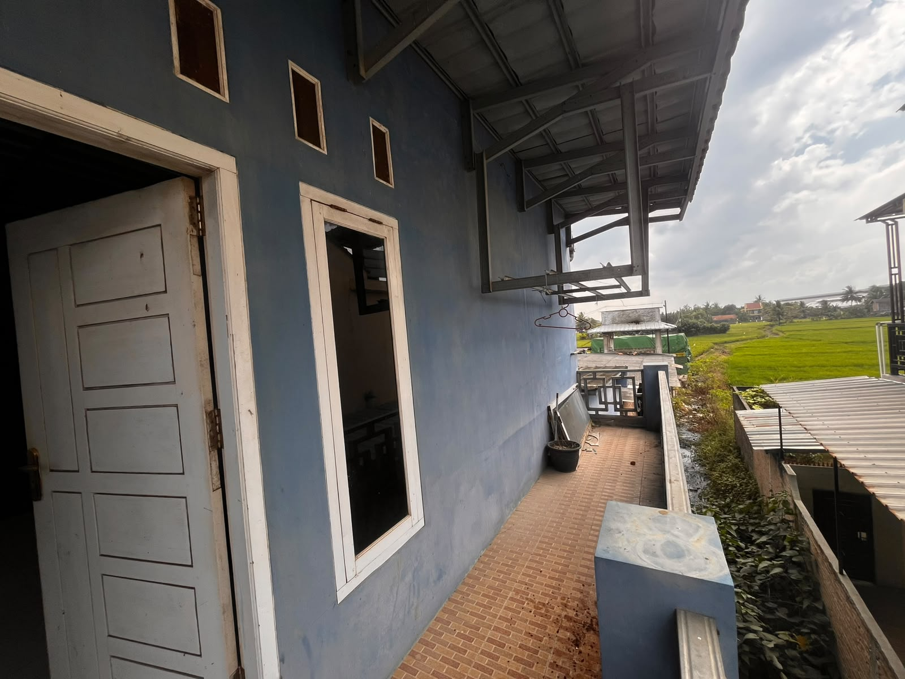
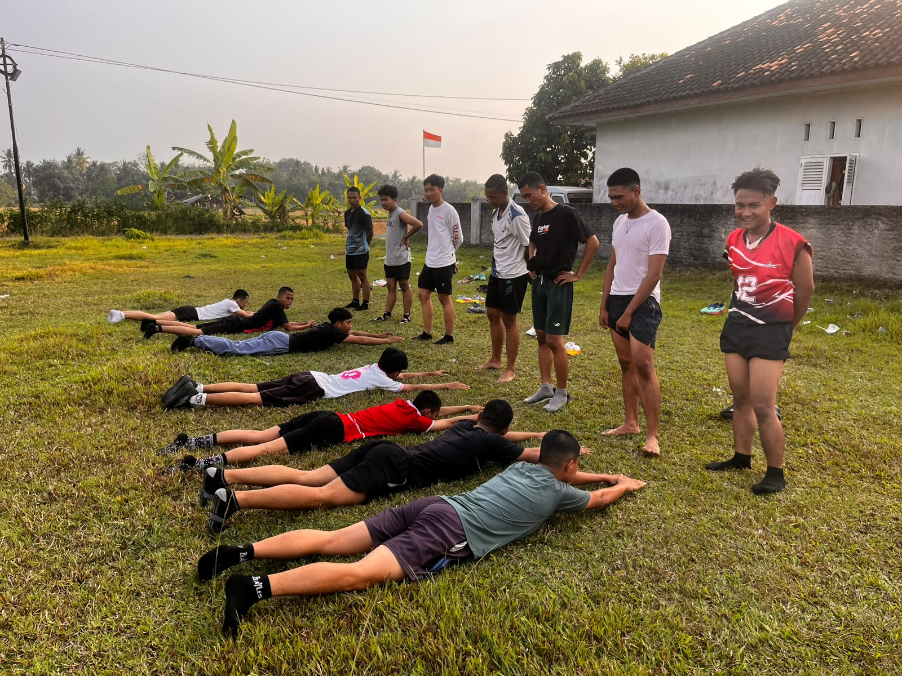
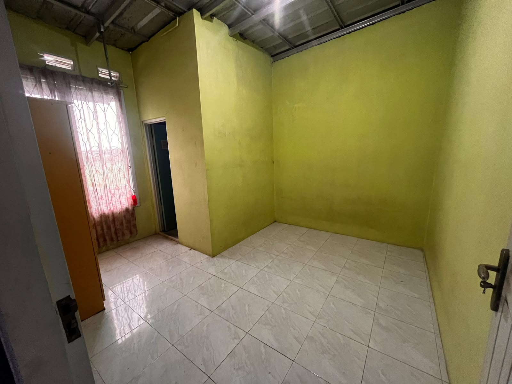
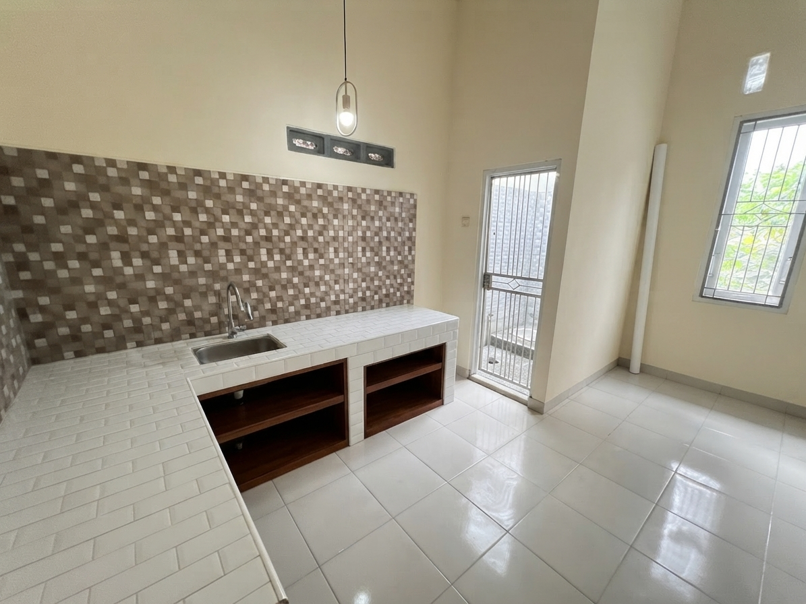

Persiapan intensif Bahasa Jepang, pembentukan karakter disiplin, dan penyaluran kerja legal melalui kemitraan Sending Organization (SO) terlisensi Kemnaker RI.

"Persaingan dunia kerja global menuntut kesiapan mental, keterampilan teknis, dan penguasaan bahasa yang matang. Jepang menjadi salah satu negara dengan peluang karier yang sangat luas bagi generasi muda Indonesia melalui program Tokutei Ginou (SSW) maupun magang resmi. LPKS Arima Persada hadir sebagai mitra terpercaya untuk mendidik, melatih, dan membentuk karakter calon tenaga kerja yang mandiri, kompeten, dan siap beradaptasi."
LPKS Arima Persada adalah Lembaga Pelatihan Kerja Swasta yang mengkhususkan diri pada persiapan intensif calon tenaga kerja menuju Jepang. Kami berfokus pada pembentukan karakter disiplin, penguasaan bahasa (Nihongo), serta pemahaman mendalam tentang etos kerja Jepang (Shigoto no Keiko).
PT. ARIMA BANGKIT PERSADA
Menjadi lembaga pelatihan kerja ke Jepang yang unggul, terpercaya, dan profesional dalam mencetak tenaga kerja Indonesia yang kompeten, berkarakter kuat, serta berdaya saing global.
Peserta tinggal di asrama aman yang mendukung pembiasaan bahasa Jepang harian (Japanese Zone).
Fokus pada percakapan (*Kaiwa*), istilah teknis kerja spesifik, serta simulasi ujian JFT/JLPT berbasis komputer.
Pemberkasan & penyaluran terjamin aman bekerja sama langsung dengan Sending Organization (SO) berizin Kemnaker.
Membentuk kedisiplinan, etika kerja (5S / Hourenso), serta ketahanan fisik dan mental yang tangguh.
Program penyerapan keterampilan kerja untuk lulusan SMA/SMK sederajat dengan kualifikasi standar bahasa Jepang N5 - N4.
Program pekerja berkeahlian spesifik dengan hak gaji setara pekerja lokal Jepang dan fasilitas kontrak jangka panjang.
Jalur profesional profesional bagi lulusan D3 / S1 untuk bekerja di posisi teknis, manajemen, dan penerjemah di Jepang.
LPKS Arima Persada bekerjasama dengan LPK SO dan TSK yang resmi terdaftar di Kementerian Ketenagakerjaan RI (Kemnaker) dan OTIT / Japan MOJ.
Lulusan langsung tersambung ke alur matching wawancara SO dengan Accepting Organization (AO) / Kumiai di Jepang.
Pengurusan berkas COE, Kontrak Kerja, dan Visa Kerja dilakukan resmi melalui mitra SO berlisensi.
Monitoring dan pendampingan peserta dilakukan sejak masa pelatihan di Indonesia hingga bekerja di Jepang.
Pendaftaran awal, pemeriksaan kesehatan (*Medical Check Up / MCU*), serta orientasi program.
Pendidikan Bahasa Jepang, Bintalsik, Etika Kerja (5S/Hourenso), dan pembentukan karakter di LPKS Arima Persada.
Mengikuti ujian bahasa (JFT-Basic / JLPT N4) dan Ujian Keahlian Keterampilan (SSW Skill Test).
Proses wawancara langsung dengan perusahaan / pemberi kerja Jepang melalui jaringan LPK SO mitra.
Pemprosesan Certificate of Eligibility (COE) dan pengurusan Visa Kerja di Kedutaan/Konsulat Jepang.
Pembekalan akhir pra-keberangkatan dan penerbangan menuju lokasi kerja di Jepang.








Isi formulir pendaftaran singkat di bawah ini. Tim konsultan LPKS Arima Persada akan segera menghubungi Anda via WhatsApp untuk orientasi gratis.
Jl. Negararatu, Desa Negara Ratu, Kec. Natar, Kab. Lampung Selatan, 35362
+62 823-7512-8230